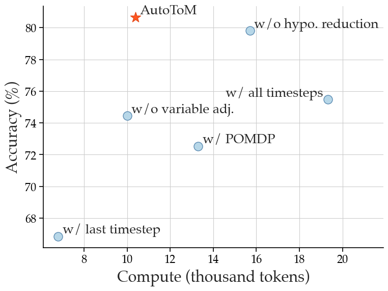

Automated Bayesian Inverse Planning and Model
Discovery for Open-ended Theory of Mind
Introducing AutoToM, a fully
automated and open-ended
Theory of Mind reasoning method. AutoToM is characterized by the following features:
Open-ended ToM: AutoToM is a model-based method that can operate in any domain, infer any mental variable, and conduct robust ToM reasoning of any order.
LLM Meets Inverse Planning: AutoToM integrates the flexibility of LLMs with the robustness of Bayesian inverse planning.
Automated Bayesian Inverse Planning: AutoToM conducts inverse planning for any specified model, automating the hypothesis sampling and Bayesian inference.
Automated Model Discovery: AutoToM performs automated model proposals and iteratively refines the model by adjusting variables and timesteps.
Performance: AutoToM outperforms existing methods in diverse domains, offering a scalable, robust, and interpretable approach to machine ToM.
Theory of Mind (ToM), the ability to understand people's minds based on their behavior, is key to developing socially intelligent agents.
We introduce AutoToM, a fully automated and open-ended Theory of Mind reasoning method.
It is the first model-based ToM method that addresses open-ended scenarios, offering a scalable, robust, and interpretable approach to machine ToM.
AutoToM is characterized by the following features:
§Open-ended ToM: AutoToM is a model-based method that can operate in any domain, infer any mental variable, and conduct robust ToM reasoning of any order.
§LLM Meets Inverse Planning: AutoToM integrates the flexibility of LLMs with the robustness of Bayesian inverse planning.
§Automated Bayesian Inverse Planning: AutoToM conducts inverse planning for any specified model, automating the hypothesis sampling and Bayesian inference.
§Automated Model Discovery: AutoToM performs automated model proposals and iteratively refines the model by adjusting variables and timesteps.
§Performance: AutoToM outperforms existing methods in diverse domains, offering a scalable, robust, and interpretable approach to machine ToM.
To this end, AutoToM not only achieves state-of-the-art performance in diverse domains, but also serves as a open cookbook for integrating the flexibility of LLMs with the robustness of model-based reasoning.
Model-based Theory of Mind
The challenge of Theory of Mind:
Theory of Mind (ToM), the ability to understand people's mental variables based on their behavior, is key to developing socially intelligent agents.
Current approaches to Theory of Mind reasoning either rely on prompting Large Language Models (LLMs), which are prone to systematic errors,
or use rigid, handcrafted Bayesian Theory of Mind (BToM) models, which are more robust but cannot generalize across different domains.
Bayesian Inverse Planning:
Bayesian Inverse Planning (BIP) models how observers infer unobservable mental states—such as beliefs and goals—from an agent's behavior .
It assumes that the agent acts rationally according to a Bayesian Theory of Mind (BToM) model, which specifies how internal variables lead to observable actions in a Bayesian network.
Using inverse inference, BIP inverts this generative process to assess what latent mental variables can lead to observed agent behavior.
This probabilistic inference serves as a robust solution to ToM challenges.
Figure 1: Analyzing the benchmarks.
Left: Performance comparison of MLLMs with visual input enabled and disabled across various benchmarks. Right: Principal component analysis displaying clusters of benchmarks based on performance metrics, with bubble size corresponding to benchmark size.
Automated Bayesian Inverse Planning
MLLMs connect pre-trained LLM and vision backbones using a connector such as an MLP projector. Various studies have suggested different optimal training methodologies for MLLMs.
Hypothesis Sampling.
Conventional BIP assumes a maually defined hypothesis space as well as hypothesis representation for each latent mental variable.
Our hypothesis sampling module instead leverages an LLM to propose only a small set of quality hypotheses for each latent variable in \( V^{t_s:t} \).
To remove spurious hypotheses generated by the LLM, we further apply hypothesis reduction to eliminate unlikely hypotheses and reduce the hypothesis space.
Bayesian Inference.
We estimate each local conditional in \( P(V^{t_s:t}, X^{t_s:t}) \) using an LLM.
After marginalizing the joint distribution over non-target latent variables, we then produce the posterior probabilities of the target variable.
Figure 3: Illustration of automated Bayesian inverse planning given a specified BToM model.
Automated Model Discovery
Prior works on Bayesian inverse planning rely on manually designed BToM models, which limits their applicability to domain-specific scenarios. In contrast, the Automated Model Discovery component automatically proposes a model and dynamically adjusts it to ensure both the effectiveness of the model—confidently inferring agents' mental states—and the efficiency of the inference by minimizing model complexity.
Information Extraction.
The information extraction module processes the given context to identify the values of observable variables \( X^{1:t} \),
including states, actions, and utterances, organized along a timeline.
When there are multiple agents, we first identify whose mental state the question is asking about,
and then construct the timesteps based on its actions.
Information Extraction.
We employ an LLM to propose an initial BToM model tailored to the available information \( X^{1:t} \) and the query.
Following this model, we conduct automated Bayesian inverse planning.
If the model utility exceeds a threshold, we accept the inference result as the final answer.
Otherwise, we use the model utility to guide model adjustments.
Model Adjustment.
We iteratively adjust the proposed model by considering two types of model adjustments: variable adjustment and timestep adjustment.
Variable Adjustment:
We refine the model structure at a specific timestep by iteratively introducing new, relevant latent variables into the model to address uncertainty in the inference.
For each adjustment, we compute the updated model utility and accept the modification that offers the biggest increase in utility.
Timestep Adjustment:
If the model utility remains low and no significant improvements can be achieved through variable adjustment given the current timesteps \( t_s:t \),
we may need to incorporate an additional timestep, \( t_s-1 \), to provide more context for the inference.
When we add one more timestep, we first apply the model structure in the initial model proposal, and then conduct variable adjustments for this new timestep as well.
Figure 4: We automatically refine the BToM model by alternating between variable adjustment and timestep adjustment.
Figure 5: By unfreezing the visual backbone and fine-tuning on 5M examples, the gap between CLIP and DINOv2 can be narrowed.
Combining Multiple Vision Encoders
As observed in Figure 4, different vision models excel in different aspects of MLLM performance.
We explore the potential of combining multiple vision encoders to leverage their distinctive representations.
Given that different vision encoders use varying architectures and image resolutions, we interpolate the output visual tokens to a fixed number, 576.
The results are tabulated in Table 2, where we observe consistent performance improvements with the addition of more models.
Vision Backbone
General
Knowledge
OCR & Chart
Vision-Centric
Encoders
Average
MMEP
MMB
SEEDI
GQA
SQAI
MMMUV
MathVistaM
AI2D
ChartQA
OCRBench
TextVQA
DocVQA
MMVP
RealWorldQA
CV-Bench2D
CV-Bench3D
SigLIP+DINOv2
51.61
1,432.02
61.28
65.99
63.30
68.82
35.69
29.40
60.01
43.00
35.70
60.40
37.54
30.00
53.99
55.52
53.58
SigLIP+DINOv2+ConvNext
54.52
1,503.51
63.83
67.97
63.95
70.40
35.99
29.30
60.69
48.20
36.90
64.97
45.53
34.67
58.69
55.74
60.33
SigLIP+DINOv2+ConvNext+CLIP
54.74
1,479.46
63.32
67.63
64.04
71.39
35.49
29.10
59.88
50.24
39.60
64.55
46.12
32.67
58.95
58.54
60.42
SigLIP+ConvNext
54.53
1,494.97
64.60
67.98
63.58
71.05
34.90
29.80
60.85
50.64
38.00
64.53
46.52
32.00
57.91
58.83
56.58
CLIP+ConvNext
54.45
1,511.08
63.83
67.41
63.63
70.80
35.09
30.40
59.91
51.32
35.00
64.45
47.88
33.33
57.25
56.32
59.08
SigLIP+DINOv2+ConvNext
53.78
1,450.64
63.57
67.79
63.63
71.34
34.80
30.20
61.04
49.32
37.70
64.05
45.83
30.00
56.21
58.08
54.33
SigLIP+CLIP+ConvNext
54.53
1,507.28
63.23
68.64
63.63
71.10
35.89
30.90
59.97
52.36
38.50
65.40
47.92
28.67
57.25
57.66
55.92
Table 2: All Benchmark Results for Model Ensemble with 1.2M Adapter Data + 737K
Instruction Tuning Data
However, this strategy has two limitations:
1) it employs interpolation, which can potentially lead to information loss, especially on vision encoders with high-resolution feature maps, and
2) it treats each model equally by simple concatenation.
Therefore, we seek a more effective strategy that fully leverages model combinations with less information loss and more flexibility.
Spatial Vision Aggregator (SVA): A New Connector Design
To effectively aggregate features from multiple vision encoders and reduce information loss during interpolation, we use a set of learnable latent queries that interact with multiple vision features through cross-attention layers.
In particular, our approach incorporates two new vision-centric design principles:
We encode spatial inductive bias by explicitly localizing the aggregation space for each token in the query.
We perform vision feature aggregation multiple times across the LLM layers, allowing the model to repeatedly reference necessary visual information.
Figure 6: Spatial Vision Aggregator (SVA).
Instruction Tuning Data for Training MLLMs
Previous work highlights the importance of data in training MLLMs, but explicit investigations are limited.
In this study, we gather all available instruction tuning data and examine data curation by enhancing diversity, balancing sources, and improving mixtures.
Data Collection
Collecting Instruction Tuning Data from existing data sources
We first use existing multimodal benchmarks and datasets involving visual interaction data,
such as Visual Question Answering (VQA) and OCR data.
We also collect a small volume of high-quality language-only instruction-following data to maintain its language ability.
Figure 7: Cambrian-7M: A Large-Scale Curated Instruction Tuning Dataset for Training MLLM.
Targeted Internet Data Collection Engine
We also introduce a data engine designed to create large-scale, reliable,
high-quality knowledge-based multimodal instruction tuning data.
Figure 8: Targeted Internet Data Collection Engine.
Cambrian-10M
To this end, we create a large pool of instruction tuning data, which we refer to as Cambrian-10M.
This pool contains approximately 9784k data points, offering a diverse range of data for our work and future research.
We visualize its composition in Figure 7.
Data Curation
Cambrian-10M is a large pool of instruction tuning data sourced from a variety of data sources,
with an unbalanced data ratio between categories.
Here, we take a preliminary step to study data curation by improving data balancing and adjusting data ratios.
Data Balancing
We follow previous work to set thresholds t
for the number of data points from a single data source.
We choose t = 150k, 250k, 350k, and 450k in this section and observe an
elbow effect in Table 3—finding that a threshold between 250k and 350k work the best for Cambrian-10M.
Figure 9: Data Balancing via Applying Thresholds on Data Sources.
Average
General
Knowledge
OCR & Chart
Vision-Centric
150k
53.7
68.0
51.3
45.2
50.5
250k
54.3
68.1
51.5
45.3
52.2
350k
54.3
67.4
51.4
46.0
52.3
450k
54.2
68.0
52.2
45.5
50.7
Table 3: Threshold ùë° value between 250k and 350k obtains better performance.
Data Ratio
Given the various capabilities of different types of visual instruction tuning data, it is essential to balance the ratio of these data types.
We conduct pilot experiments with a fixed dataset size of 1350k,
examining the impact of different data ratios on downstream performance.
We visualize the results in Figure 10 and summarize our findings as follows:
(i) Balancing General, OCR, and Language data is crucial.
(ii) Performance on knowledge-intensive tasks is influenced by multiple factors,
often requiring a mix of OCR, chart, reasoning, and general perception.
Figrue 10: Exploring instruction tuning data mixture ratios.
Cambrian-7M
By applying data filtering to Cambrian-10M with our identified data ratio, we create a smaller but higher-quality dataset called Cambrian-7M.
Table 4 showcases the benefits of a well-balanced and carefully curated dataset. Despite having fewer samples, Cambrian-7M demonstrates improved performance.
Average
General
Knowledge
OCR & Chart
Vision-Centric
LLaVA-665K
40.7
64.7
45.2
20.8
32.0
Cambrian-10M
54.8
68.7
51.6
47.3
51.4
Cambrian-7M
55.9
69.6
52.6
47.3
54.1
Table 4: Performance improves with better instruction tuning data curation.
Alleviating the "Answer Machine Phenomenon" via System Prompts
Here, we investigate a phenomenon we term the "answer machine phenomenon."
We observe that a well-trained MLLM may excel at VQA benchmarks, but lack basic conversational abilities and default to outputting short, curt responses (see examples in Figure 5).
To address this, we find that incorporating additional system prompts during training mitigates this phenomenon.
We append prompts such as "Answer the question using a single word or phrase."
before questions that generate a single word or phrase in the response.
We observe that after integrating these system prompts, the model's benchmark performance remains unchanged,
while its conversational ability significantly improves.
Figure 11: Incorporating System Prompt in Instruction Tuning Data alleviates the “Answer Machine Phenomenon”.
Towards Open-ended Theory of Mind
We evaluated our method on multiple Theory of Mind benchmarks, including ToMi , BigToM ,
MMToM-QA , MuMA-ToM , and Hi-ToM .
Figure 5: Examples questions and the necessary BToM model in diverse benchmarks,
encompassing different mental variables, observable contexts, numbers of agents, the presence or absence of utterances, wording styles, and modalities.
Unlike our AutoToM method, many recent ToM baselines can only be applied to specific benchmarks. Among general methods, AutoToM achieved the best result on average.
Model
General
Knowledge
OCR & Chart
Vision-Centric
Method
# Vis Tok.
Avg
MMEP
MMB
SEEDI
GQA
Avg
SQAI
MMMUV
MathVistaM
AI2D
Avg
ChartQA
OCRBench
TextVQA
DocVQA
Avg
MMVP
RealworldQA
CV-Bench2D
CV-Bench3D
GPT-4V
UNK.
63.0
1409.4
75.8
69.1
36.8
65.2
75.7
56.8
49.9
78.2
77.4
78.5
64.5
78.0
88.4
62.4
50.0
61.4
64.3
73.8
Gemini-1.0 Pro
UNK.
-
1496.6
73.6
70.7
-
-
79.5
47.9
45.2
-
-
-
65.9
-
-
-
-
-
-
-
Gemini-1.5 Pro
UNK.
-
-
-
-
-
-
-
58.5
52.1
80.3
-
81.3
-
73.5
86.5
-
-
67.5
-
-
Grok-1.5
UNK.
-
-
-
-
-
-
-
53.6
52.8
88.3
-
76.1
-
78.1
85.6
-
-
68.7
-
-
MM-1-8B
144
-
1529.3
72.3
69.9
-
-
72.6
37.0
35.9
-
-
-
-
-
-
-
-
-
-
-
MM-1-30B
144
-
1637.6
75.1
72.1
-
-
81.0
44.7
39.4
-
-
-
-
-
-
-
-
-
-
-
Base LLM: Llama-3-Ins-8B
Mini-Gemini-HD-8B
2880
72.7
1606.0
72.7
73.2
64.5
55.7
75.1
37.3
37.0
73.5
62.9
59.1
47.7
70.2
74.6
51.5
18.7
62.1
62.2
63.0
LLaVA-NeXT-8B
2880
72.5
1603.7
72.1
72.7
65.2
55.6
72.8
41.7
36.3
71.6
63.9
69.5
49.0
64.6
72.6
56.6
38.7
60.1
62.2
65.3
Cambrian-1-8B
576
73.1
1,547.1
75.9
74.7
64.6
61.3
80.4
42.7
49.0
73.0
71.3
73.3
62.4
71.7
77.8
65.0
51.3
64.2
72.3
72.0
Base LLM: Vicuna-1.5-13B
Mini-Gemini-HD-13B
2880
70.7
1597.0
68.6
70.6
63.7
54.1
71.9
37.3
37.0
70.1
60.8
56.6
46.6
70.2
69.8
49.4
19.3
57.5
53.6
67.3
LLaVA-NeXT-13B
2880
69.9
1575.0
70.0
65.6
65.4
53.7
73.5
36.2
35.1
70.0
62.9
62.2
51.4
67.1
70.9
55.9
36.0
59.1
62.7
65.7
Cambrian-1-13B
576
73.7
1,610.4
75.7
74.4
64.3
60.2
79.3
40.0
48.0
73.6
71.3
73.8
61.9
72.8
76.8
62.2
41.3
63.0
72.5
71.8
Base LLM: Hermes2-Yi-34B
Mini-Gemini-HD-34B
2880
76.2
1659.0
80.6
75.3
65.8
62.4
77.7
48.0
43.4
80.5
68.1
67.6
51.8
74.1
78.9
63.8
37.3
67.2
71.5
79.2
LLaVA-NeXT-34B
2880
76.0
1633.2
79.3
75.9
67.1
62.5
81.8
46.7
46.5
74.9
67.7
68.7
54.5
69.5
78.1
64.0
47.3
61.0
73.0
74.8
Cambrian-1-34B
576
76.8
1689.3
81.4
75.3
65.8
67.0
85.6
49.7
53.2
79.7
71.9
75.6
60.0
76.7
75.5
68.5
52.7
67.8
74.0
79.7
Table 5: Cambrian-1 outperforms other open-source models and achieves comparable performance with proprietary models, while using only 576 visual tokens.

Figure 12: Cambrian-1 outperforms other open-source models and achieves comparable performance with proprietary models.
Conclusion
To conclude, Cambrian-1 is a family of state-of-the-art MLLMs that achieve top performance across diverse benchmarks
and excel in visual-centric tasks. We provide model weights, open-source code, datasets, and detailed recipes for model training and evaluation.
We hope our work will strengthen the open research community and accelerate research in both visual representation learning and multimodal systems.
BibTeX
@article{tong2024cambrian,
title={{Cambrian-1: A Fully Open, Vision-Centric Exploration of Multimodal LLMs}},
author={Tong, Shengbang and Brown, Ellis and Wu, Penghao and Woo, Sanghyun and Middepogu, Manoj and Akula, Sai Charitha and Yang, Jihan and Yang, Shusheng, and Iyer, Adithya and Pan, Xichen and Wang, Austin and Fergus, Rob and LeCun, Yann and Xie, Saining},
journal={arXiv preprint arXiv:2406.16860},
year={2024}
}